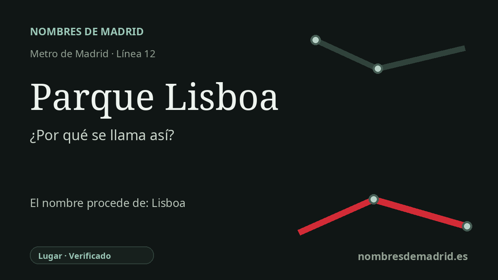

Publicado el · Investigación de Nombres de Madrid · Cómo verificamos cada origen · 8 fuentes consultadas
Respuesta rápida
Parque Lisboa toma su nombre del barrio y topónimo local de Alcorcón que rodea la estación, referido en última instancia a Lisboa, Portugal. La zona formó parte de la expansión urbana de Alcorcón iniciada a finales de los años sesenta entre San José de Valderas y el casco antiguo.
La historia del nombre
La estación Parque Lisboa toma su nombre del entorno Parque Lisboa, o Parque de Lisboa, de Alcorcón. En el uso del transporte el nombre oficial de la estación aparece abreviado como Parque Lisboa, mientras que la ficha del CRTM identifica todavía su vestíbulo como Parque de Lisboa. Por tanto, el nombre procede de un topónimo y barrio local, cuyo referente último es Lisboa, la capital portuguesa.
La historia anterior del nombre está ligada al crecimiento urbano del norte de Alcorcón. La documentación urbanística municipal indica que Parque Lisboa se inició en 1969 entre San José de Valderas y el casco antiguo, en la misma etapa que otras grandes promociones residenciales. Una nota del Archivo Municipal de Alcorcón muestra además el topónimo en uso a finales de los años sesenta: en 1968 se solicitó la construcción del Club Deportivo Parque de Lisboa en terrenos de la supermanzana del poblado de San José de Valderas.
Esa cronología es importante porque el nombre pertenece a la etapa que transformó Alcorcón tras los años cincuenta y sesenta. El municipio había estado asociado a la agricultura y la alfarería, pero la expansión metropolitana de Madrid lo empujó hacia una función residencial. Parque Lisboa contribuyó a ocupar el espacio entre el desarrollo separado de San José de Valderas y el casco urbano antiguo, hasta convertirse en uno de los barrios reconocibles del norte de Alcorcón.
La referencia lisboeta también se aprecia en el callejero cercano. La estación está junto a la avenida de Leganés y próxima a la avenida de Lisboa, y en el entorno aparecen nombres como Porto Cristo, Porto Colón, Porto Lagos y Cabo de San Vicente. Esto no demuestra que el nombre del Metro se eligiera para homenajear directamente a Portugal; sí muestra que la estación heredó una identidad de barrio ya marcada por topónimos portugueses y atlánticos.
El Metro llegó bastante después que el barrio. La línea 12, MetroSur, inauguró sus 28 estaciones el 11 de abril de 2003 para conectar Alcorcón, Leganés, Getafe, Fuenlabrada y Móstoles entre sí y con el resto de la red madrileña. La interpretación mejor respaldada es, por tanto, sencilla: la estación se llama así por el área Parque Lisboa de Alcorcón, en última instancia por Lisboa, con el desarrollo urbanístico de finales de los años sesenta como contexto histórico.